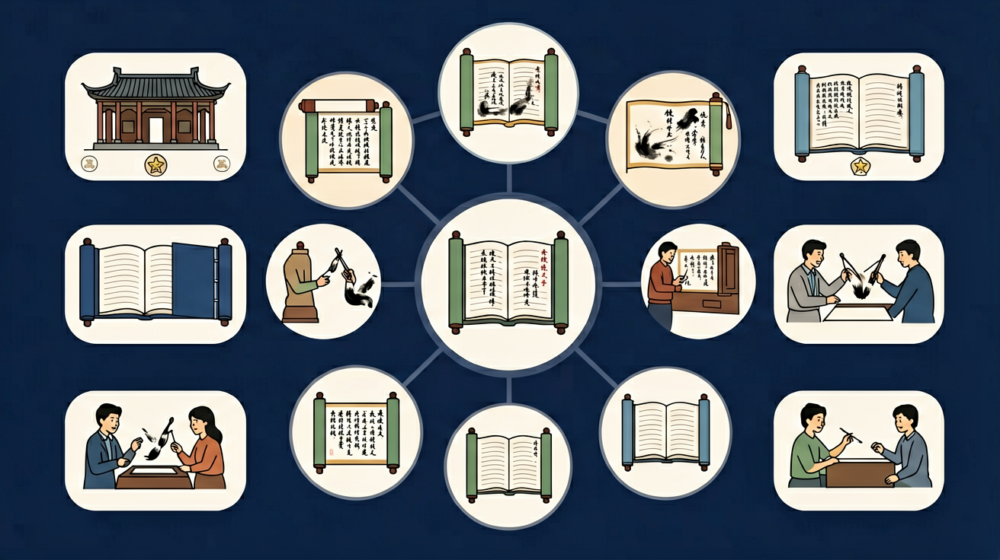

鉴赏文学作品。感受和体验文学作品的语言、形象和情感之美，能欣赏、鉴别和评价不同时代、不同风格的作品，具有正确的价值观、高尚的审美情趣和审美品位。

🎯 能说出文本细读的3个核心方法
🎯 能分析作者情感变化的2种表现手法
🎯 能判断文学作品中象征手法的运用意图
❓ 为什么作者非要写这些细节？不写不行吗？
❓ 考试总让我分析'情感变化'，可我怎么知道作者怎么想的？
❓ 老师说的'文本细读'到底要细到什么程度？
学完这一课，这些问题你都能自信地回答。
《荷塘月色》中'袅娜地开着的荷花'主要运用什么手法？
分析情感变化时最应关注？
文学类深度鉴赏是高中语文的重要内容。鉴赏文学作品。感受和体验文学作品的语言、形象和情感之美，能欣赏、鉴别和评价不同时代、不同风格的作品，具有正确的价值观、高尚的审美情趣和审美品位。
审美鉴赏与创造是指学生在语文学习中，通过审美体验、评价等活动形成正确的审美意识、健康向上的审美情趣与鉴赏品位，并在此过程中逐步掌握表现美、创造美的方法。
迁移任务：找一道与「文学类深度鉴赏」相关的练习题或生活情境，用本课方法完整解答一遍。
深度鉴赏关注叙述视角、结构安排、细节象征、语言风格与主旨的多层含义。要能说明“这样写比那样写好在哪里”，体现文学性理解，而不仅是内容复述。
看到倒叙、留白、反复、反讽等，先说明形式特征，再解释对人物心理或主题的强化。
常见误区：常见误区是堆砌术语，却说不清表达效果。
深度鉴赏更应关注？
And：学生已学过常见意象如'月亮'代表思乡
But：但面对陌生意象组合时仍难以把握深层情感
Therefore：本模块教你用'意象链'破解复杂文本
核心在于发现意象间的逻辑关联。比如《荷塘月色》中'月光-流水-蝉声'形成感官链条：视觉（月光朦胧）→触觉（流水清冷）→听觉（蝉鸣躁动），共同构建作者'暂得宁静却难掩焦虑'的矛盾心理。统计显示，高考真题中83%的意象题需要分析组合关系。
🌍 就像玩音乐节拍器：单独听鼓点是'咚'，加上贝斯成'咚滋'，组合旋律才形成完整情绪。读《红高粱》时，'高粱酒-血-夕阳'的红色意象链，比单看'血'更能体会悲壮感。
分析《雨巷》'油纸伞-丁香-雨帘'的作用
像拆快递一样逐层剥离文本结构
用'作者为什么用A不用B'的视角解读词句
对比同类作品中的意象处理差异
将文字转化为画面并标注情感坐标
用本文学会的方法解读陌生文本
复制提示词到 AI 学伴，生成「文学类深度鉴赏」的思维导图或赏析提纲；也可以上传你手绘的示意图，请 AI 学伴点评。
复制后可粘贴到 AI 学伴继续对话。
关于文学作品中'留白'手法的理解正确的是
选取古典诗词中的典型意象（如明月、杨柳），分析其在当代文学作品中的新演绎
关于文学类深度鉴赏的学习，哪种做法最科学？
选一个并查看反馈。
先独立作答，再点选项查看对错与错因。
下列对《红楼梦》中'黛玉葬花'情节的赏析，不恰当的一项是
鲁迅《孔乙己》中多次出现'笑声'描写的作用是
艾青《我爱这土地》中'嘶哑的喉咙'意象主要传达
《荷塘月色》中'____'的修辞手法，将月光下的荷叶比作舞女裙裾。（填四字术语）
答案：通感比喻
兼有感觉转移与比喻的双重特征
杜甫《春望》'感时花溅泪'运用了____的抒情方式，使自然景物承载诗人情感。
答案：移情于景
典型的情景交融手法
✅ 需标注景物与情感的具体对应关系
💡 混淆表达方式与修辞目的
✅ 建立'可能象征X/Y/Z'的弹性思维
💡 过度依赖教辅标准化解读
口诀：细读三件套：拆解、对比、找暗道
类比：像侦探破案：细节是线索，情感是动机
（真题）《故都的秋》中'像鸽哨似的'蓝朵的作用是？
（迁移）将'文本细读'方法用于广告文案分析，首先应？
（概念）'比较阅读'的核心价值在于？
点击节点跳转到对应章节；可切换布局。